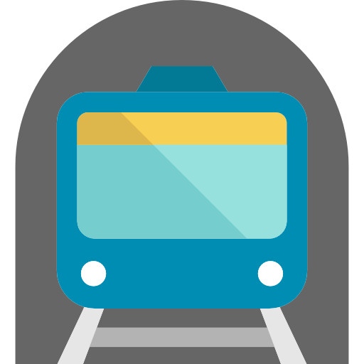
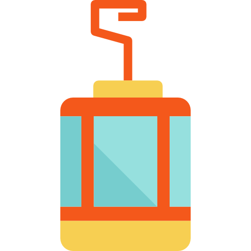
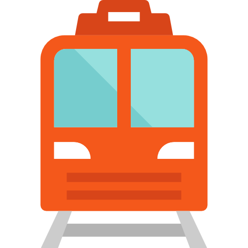
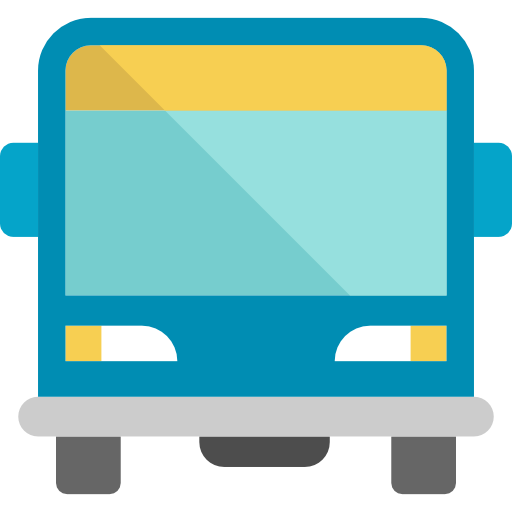

Sistemas de Transporte
MetroTren
Sistema de transporte público que consiste de múltiples trenes en una estructura de líneas, en las que se disponen estaciones que los trenes transitan para que los usuarios puedan desembarcar o embarcar.
MetroCable
Este sistema teleférico cumple con la posibilidad de que habitantes de los barrios de Caracas ubicados habitualmente en sectores montañosos puedan transportarse de manera más rápida y segura al centro de la ciudad.
CableTren
Es un sistema de transporte ferrovial ligero. Es construido con el fin de que los habitantes de sectores populares de la comunidad de Petare, puedan acceder a las estaciones del metro de manera más eficaz y rápida. Se trata de un sistema automático (funciona sin conductores).
MetroBus
Es un sistema de transporte público alternativo y . Inicialmente el sistema de Metrobuses tenía planeado sustituir a todos los transportes públicos y líneas urbanas que prestan servicios en Caracas y la zona Metropolitana.